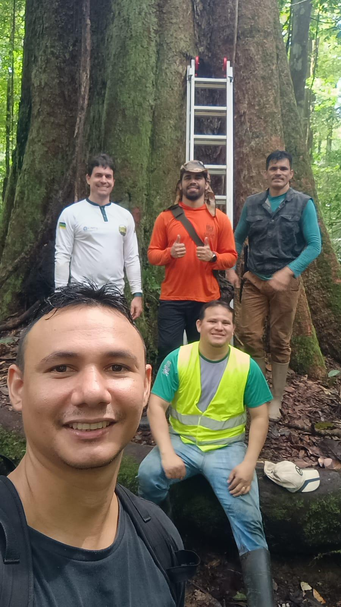
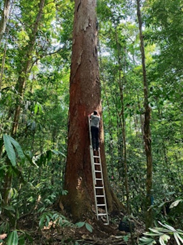
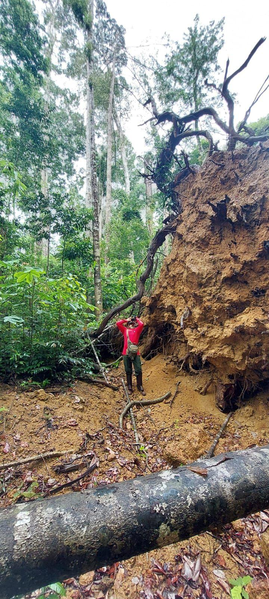
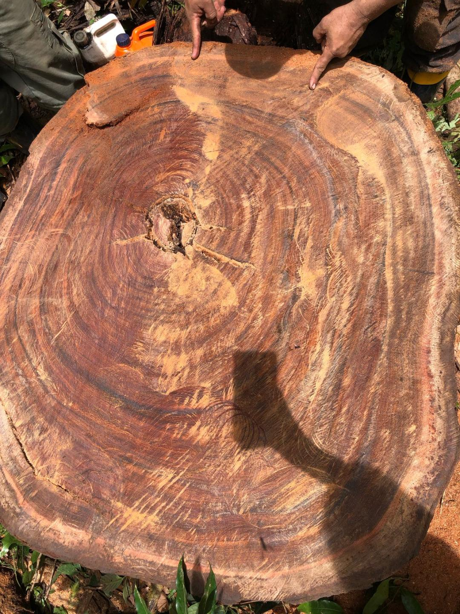

Forest Inventory
Permanent plots, tree growth, mortality, recruitment, biomass and giant tree structure.
PROJECT
Long-Term Ecological Monitoring of Giant Trees in the Amazon.
PELD-MIAG
PELD-MIAG is the core long-term ecological research project within GigaFlor. It investigates how giant tropical trees shape biodiversity, carbon storage, forest structure, hydrological functioning and climate resilience across Amazonian forests.
The project integrates permanent plots, giant tree monitoring, microclimate sensors, soil and hydrological studies, natural regeneration, functional ecology, airborne LiDAR, satellite data and spatial ecological modeling.

SCIENTIFIC INFRASTRUCTURE
Permanent plots, tree growth, mortality, recruitment, biomass and giant tree structure.

Microclimate, soil moisture, hydrology, groundwater, seasonality and topographic gradients.

Plant traits, hydraulic strategies, wood structure, biodiversity and climate resilience mechanisms.

Canopy height models, three-dimensional forest structure, biomass and density mapping.

Ecological consequences of giant tree falls, regeneration, microclimate and soil exposure.

Wood structure, growth history and long-term signals recorded by large Amazonian trees.
INSTITUTIONAL PARTNERS